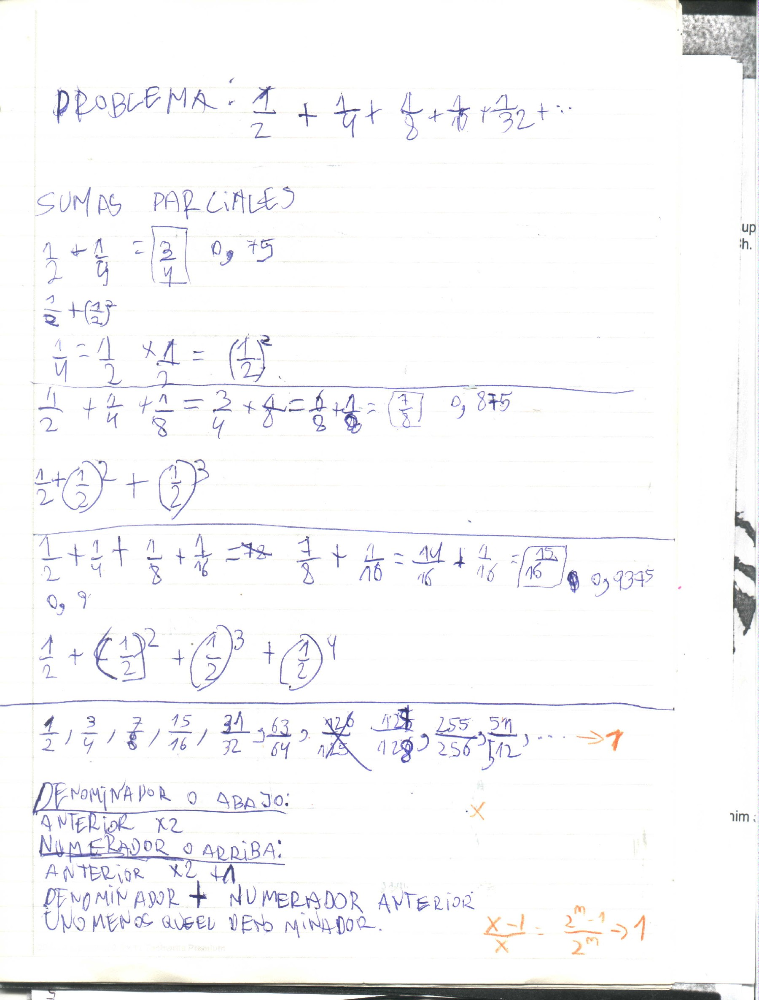
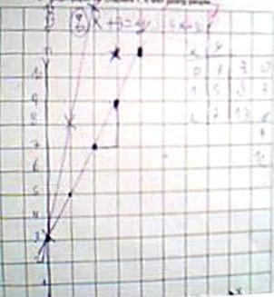
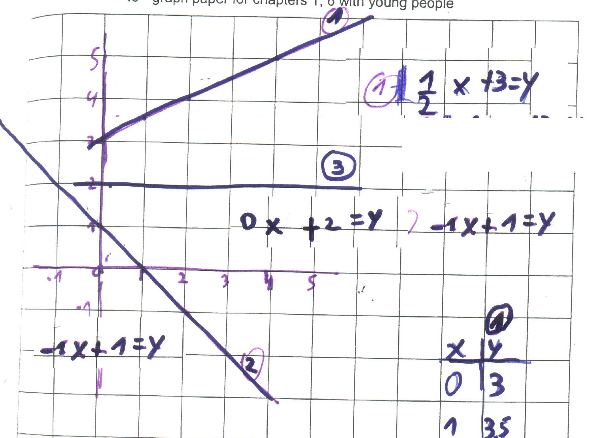
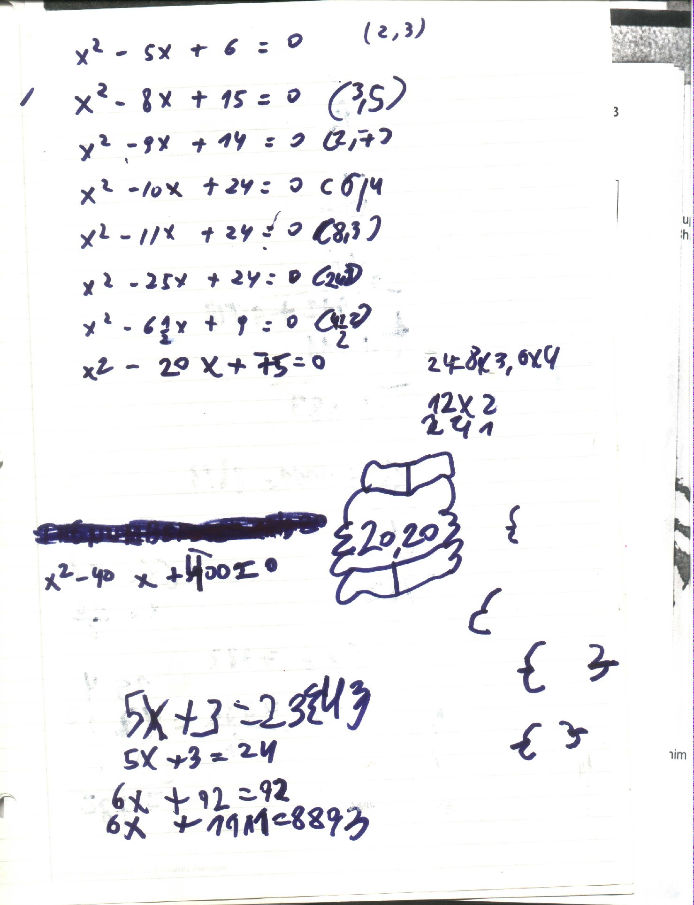
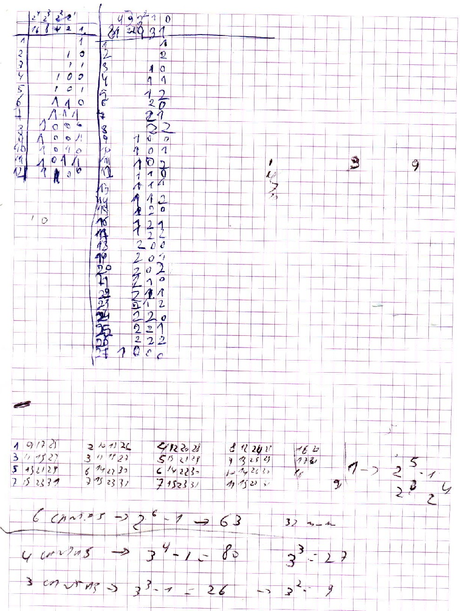

Don works with Tadeo (age 10) in Argentina, via IM
On Wed, 3 September 2003 Don received as an attached file via email, the Spanish translation of Chapter 1 Questions section of Don's worksheet book, from a Dad in Argentina! He is working with his son who speaks only Spanish.
On 10 November 2003, Don met, spoke with and saw on their webcam, Tadeo (age 9), his brother Pablo, and their Mom and Dad, who all live in Argentina. Don will be working with Tadeo once a week in his worksheet book via Yahoo Instant Messenger. He and his Dad (who translated the question section of chapter 1 into Spanish for his son), have been working in chapter 1, the infinite series; he figured out that if you start with 1/n, the limit will be 1/(n-1)- he did a fine job with this, see below!

On 17 November 2003 Don started working with Tadeo on graphing linear equations. He came up with a couple of interesting patterns! Here is Don's version of their session.
Don started Tadeo with the graphing of the equation 2x+3 = y (below). He was to try a small number to put in for x, he chose 4, then what would he put in for y to make the equation true = verdad? Well 2*4 (2 times = por 4) + 3 =11, so the if you put 4 in for x and 11 in for y the sentence would be true. (Don is learning some Spanish, as well as Tadeo is learning some English- it's a good thing Dad is helping with the translation!) If you put 4 in for x and 100 for y, it would not be true. Tadeo plotted the point at (4,11); then he got more points and plotted those. The graphs below were made by Don, viewable by Tadeo. Dad will send Tadeo's graphs. They looked at the pattern in the graph, over 1 up 2 and the y-numbers go up 2, when the x-number goes up 1. And there is a 2 in the equation!

Then Don gave Tadeo the equation 5x + 3 = y to graph. Tadeo noticed that the pattern in the graph was to go right 1 up 5 this time, and the y-numbers go up 5 in the table when the x-number goes up 1. And there is a 5 in the equation! Tadeo said:"When you go from the green line to the red line, the y-numbers go up 0, then 3, then 6, and so on". (0,3) is on both graphs, so the y-number 3 goes up 0. From (1,5) to (1,8), the y-number goes up 3; from (2,7) to (2,13) the y-number goes up 6, and so on. It took Don a while to understand what Tadeo was saying, because Don was focusing on the 2 numbers in the equation and not the change from one line the the other line. The other pattern Tadeo saw was:" Whatever the multiplying number is, when you put 0 in for x, you get the adding number!" That was fine Tadeo!
Then Don asked Tadeo to write the equation for the x graph below. After some discussion, he came up with the equation 3x + 4 = y . They checked this equation by putting the pair of numbers (2,10) in for x and y and it made the equation true.

Don asked Tadeo to write the equations for the graphs #1, 2 and 3 for next week.
On 24 November 2003, Tadeo Showed Don the equations he had come up with for the 3 graphs above, eq. 1 was .5x+3=y, eq.2 was -1x+1=y and eq. 3 was 0x+2=y. He did have a little trouble with #3, but got it. He also made Don a graph to find the equation, which turned out to be - 2x + 5=y.
At this point Don started Tadeo on solving equations (ch.8) -find the number(s) that make the sentence true. Tadeo got the first 2 correct, quickly
2x + 3 = 17 {7}
2x + 3 = 18 {7 1/2}
Since he was quick, knew 52 = 25 and 4 - 5 = -1, Don decided to have Tadeo work on solving quadratic equations. He solved five of these (see below) and saw the secrets to getting the 2 numbers that worked, like for x2 - 5x + 6 = 0 the answers are {2,3}. Don left him with 2 quadratic equations to solve for next time: x2 - 25x + 24 = 0 and x2 - 6 1/2 x + 9 = 0.

On 1 December 2003, while waiting for Tadeo, his younger brother did
2+1 = 3
20 + 10 = 30 and
200 + 100 = 300.
After finding pairs of factors whose product is 24, Tadeo figured out the answers for x2 - 25x + 24 = 0. After multiplying 2 1/2 X 2 1/2 three ways (1... 2.5x2.5, 2. using graph paper and counting squares, and 3. 5/2 x 5/2 = 25/4 = 6 1/4), Tadeo found the two answers for x2 - 6 1/2 x + 9 = 0 to be {4 1/2, 2}. Then Tadeo made up these two for Don and his Dad x2 - 20x + 75 = 0 {15,5}, and x2 - 40x + 400 = 0 {20,20}, really only one answer {20}.
Don then gave Tadeo these and he solved
5x + 3 = 23 {4},
5x + 3 = 24 {4 1/5},
then he made up and solved
6x + 92 = 92 {0},
and after much discussion of what was too big and what was too small,
6x + 1111 = 8893 {1297} which amazingly came out a whole number!
Fine job, Tadeo!
On 8 December 2003, Tadeo asked if we could work on multiplying and dividing decimals. We spent the whole time on that. He knew 1.25 which they write as 1,25 is 1 peso and 25 centavos and 100 centavos = 1 peso. And we went from there. He liked doing that after doing the infinite series and graphing with Don.
On 15 December 2003, Don showed Tadeo the The Magic Number Game. See Sheri's work and the cards Don sent to Tadeo. This involves counting in binary. After Tadeo wrote the number from 1-31 in binary, we looked at the table as Sheri had done. Then Don asked Tadeo if he had 6 cards what would change? What would the numbers go up to and how many number would be on each card? See Kaitlin's cards.

On 22 December 2003 Tadeo told Don he had figured out that he had 6 cards in the game above, the numbers would go up to 63 =2^6-1 and there would be 32 numbers on each of the 6 cards (see his work above).
Then Don worked with Tadeo on cookie-sharing (ch.2). Don asked if he would share 5 cookies between 3 people, how many would each person get? He figured that each person would get: 1+1/2+1/6 = 1+1/2+1/8 +1/24 = 1+6/10+6/100+6/1000+6/10000+... = 1.666...= 1 2/3 = 5/3 cookies! He figured out the first two, then HE asked if he could get a decimal; that's how they got the next 2. Then Don asked about the easiest way, and he got the last 2. That was a most exciting day!; both his Dad who translated for him and he thought so also. Tadeo was going so fast at the beginning, Don had to calm them down so he could write what he did. That is a common thing with the children. They are looking forward to January when we will continue.
Tadeo said afterwards: "Thank you for the fun Mathematical year!" (One month! ;-))
Tadeo came back to work with Don in July 2004
See their work on tossing pennies.